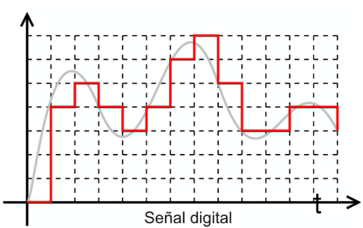
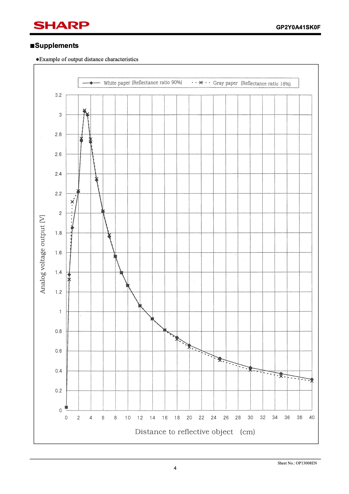

Práctica 5. Uso de ADC.
Objetivos
El objetivo de esta práctica es continuar conociendo los mecanismos de entrada/salida ofrecidos por ESP-IDF para interaccionar con dispositivos usando ESP32.
Trabajaremos los siguientes aspectos del API de ESP-IDF:
- Uso de un conversor analógico-digital (ADC).
- Uso de un sensor de infrarrojos para medir distancias.
Material de consulta
Para ver los detalles de cada aspecto de esta práctica se recomienda la lectura de los siguientes enlaces:
- Documentación del API de ESP-IDF para los 2 ADCs disponibles en modo one-shot.
- Calibración de ADC en ESP-IDF
- La hoja de especificaciones del sensor de infrarrojos SHARP GP2Y0A41SK, disponible en el Campus Virtual
- Más información sobre la operación de una ADC
Conversor Analógico-Digital (ADC)
Un sensor permite capturar magnitudes físicas (temperatura, presión, distancia, intensidad lumínica...) y transformarlas en una señal eléctrica analógica mediante un transductor. Un conversor analógico-digital (ADC) muestrea esas señales analógicas y las transforma en una señal digital, que podemos procesar en nuestra CPU.
Un ADC muestrea periódicamente una señal analógica y asigna un valor digital a cada muestra (sampling y quantization). El valor se obtiene al dividir el valor del voltaje de entrada muestreado por un voltaje de referencia y multiplicándolo por el número de niveles digitales. El valor resultante se representa como un entero, en un formato adecuado para su almacenamiento en memoria y su uso por parte de nuestro procesador.
La resolución de un ADC indica cuántos bits tiene la salida (es decir, cuántos bits emplea para codificar cada muestra que toma de la señala de entrada analógica) La siguiente figura muestra un ejemplo de la cuantización de una señal analógica (en gris) y su transformación a una serie de valores, cada uno de ellos codificados usando 3 bits.

Otro factor relevante a la hora de escoger un ADC es su frecuencia de muestreo. De acuerdo al Teorema del muestreo para que la señal muestreada x(nT) represente fielmente la señal analógica x(t): * x(t) debe ser una señal limitada en banda de ancho de banda fN. * La frecuencia de muestreo fs debe ser al menos el doble de la máxima frecuencia de la señal analógica x(t).
### ADCs en nuestro ESP32 El ESP32 dispone de 2 ADCs tipo SAR (Succesive Aproximation-Register) de 12 bit (es configurable entre 9 y 12 bits). El voltaje de referencia es 1100mV, por lo que deberíamos adaptar la señal de entrada a ese rango para obtener la mayor precisión.
Hay 2 ADCs disponibles que ofrecen un total de 18 canales: 8 en el ADC1 (GPIO32 - GPIO39) y 10 más en el ADC2 (GPIO0, GPIO2, GPIO4, GPIO12 - GPIO15, GOIO25 - GPIO27. Es mejor evitar el uso de GPIO2, GPIO2 y GPIO15 como canal de ADC. Consultad la documentación para más detalles). Es decir, podríamos muestrear hasta 18 señales analógicas diferentes, conectando cada una a un pin GPIO diferente. Es importante recordar que no podemos usar un mismo GPIO para varios propósitos simultáneamente (por ejemplo, como entrada digital y como ADC).
ADC2 y WiFI
Recuerda que la radio WiFi usa el ADC2. Por tanto, tu aplicación no debe usar ningún canal del ADC2 si está utilizando la radio WiFi.
Voltaje de referencia: atenuación
Aunque el voltaje de referencia indicado por Espressif es de 1100mV, cada placa sufrirá pequeñas variaciones durante su fabricación, que moverán ligeramente dicha referencia. Para solventarlo, las placas se someten a una calibración tras su fabricación. Todos nuestros SoCs están calibrados y su referencia real está presenta en memoria no volátil (eFuse).
El ESP32 permite atenuar la señal de entrada para adaptarla al rango de referencia (aunque siempre resulta aconsejable hacerlo con un circuito externo si es posible).
| Atenuación | Rango medible en la entrada |
|---|---|
ADC_ATTEN_DB_0 |
100 mV ~ 950 mV |
ADC_ATTEN_DB_2_5 |
100 mV ~ 1250 mV |
ADC_ATTEN_DB_6 |
150 mV ~ 1750 mV |
ADC_ATTEN_DB_11 |
150 mV ~ 2450 mV |
Lectura del ADC
Consulta las transparencias de la asignatura y la documentación del API de ESP-IDF del modo one-shot así como la de la calibración de ADC en ESP-IDF.
Asimismo, es muy recomendable revisar el ejemplo disponible en la distribución de esp-idf.
Lectura del sensor de infrarrojos
El sensor GP2Y0A41SK0F de Sharp permite medir distancias de entre 4 y 30cm usando infrarrojos. Combina un PSD (Position Sensitive Detector) y IR-LED (infrared emitting diode) de manera que puede emitir luz infrarroja y determinar cuándo ha vuelto al sensor tras reflejarse en un obstáculo cercano. Ese tiempo de vuelo se utiliza para determinar la distancia al objeto.
De acuerdo a la hoja de especificaciones que se puede encontrar en el Campus Virtual, este sensor proporciona una tensión en función de la distancia al obejto más cercano. La siguiente figura muestra esa relación (figura extraída de la hoja de especificaciones del sensor):

Dicha curva nos indica que, para una distancia de 8cm debemos esperar un voltaje de salida de aprox. 1.58V. Para 22cm, veremos 0.6V en la salida del sensor. Es importante observar que, para distancias inferiores a 4cm, los valores obtenidos en la salida no nos permiten discriminar la distancia de forma correcta.
Por tanto, bastará con conectar la salida del sensor (cable amarillo) a un canal ADC de nuestro ESP32 y medir el voltaje que saca el sensor (ojo: no el valor raw del ADC, sino el valor de voltaje que ofrece el sensor).
Voltaje a distancia
Una vez conseguido el voltaje que está devolviendo el sensor, ¿qué expresión usarás en el código para obtener la distancia en centímetros?
En la página 3 de la hoja de especificaciones del GP2Y0A41SK0F se nos indica que Vcc = 4.5 - 5.5 V. Por tanto, debemos alimentar el sensor con 5V (cable rojo del sensor al pin de 5V; cable negro a pin de tierra). De acuerdo a la figura anterior (en página 4 de la hoja de especificaciones), el voltaje de salida del sensor es siempre inferior a 3.3V por lo que en principio no debería ser un problema conectar directamente dicha salida (cable amarillo) a un pin GPIO del ESP32
Voltaje de entrada en ESP32
El ESP32 funciona a 3.3V, lo que significa que nunca deberíamos presentarle un voltaje mayor de 3.3V en ningún pin (configurado como entrada o como ADC). Espressif no especifica claramente si dispone de circuito de protección en todos los pines, por lo que debemos obrar con cautela. En este ejercicio, conectaremos directamente el sensor de ifnrarrojos a un pin, pero de acuerdo a la hoja de especificaciones (página 3, primera tabla), el voltaje de salida podría ser de Vcc (5V en nuestro caso), potencialmente dañando el ESP32. Dicha salida se dará en situaciones extarordinarias de reflexión, y no deberían producirse en nuestras pruebas (usaremos un folio en blanco). Pero, para mayor robustez y seguridad, convendría adaptar la señal con un divisor de tensión o un op-amp.
Ejercicio: lectura de distancias
USaremos el sensor de distancia GP2Y0A41SK0F de Sharp conectado al ADC de ESP32. Deberás conectar la alimentación del senor al pin de 5V del ESP32, las tierras en común y el cable de medida a un pin GPIO del ESP32 que configurarás para usar un canal de ADC.
- Muestrear el ADC correspondiente cada segundo, haciendo la media de
Nlecturas en cada muestreo (siendoNuna constante que se puede modificar via menuconfig). Usad un timer para el muestreo. Se notificará mediante *un evento^, la disponibilidad de un nuevo dato. El código relativo al acceso al sensor estará en un componente separado con llamadas para la configuración, arranque/parada de las medidas, y obtener el último valor de distancia medido. - El programa principal registará un handle del evento correspondiente. En dicho handle se invocará a la función del módulo anterior para conseguir el valor de la última distancia medida, y se mostrará por pantalla.
- Se deberá comprobar la salida de las funciones invocadas, e informar en caso de error. Utiliza las funciones proporcionadas por ESP-IDF documentadas en su web